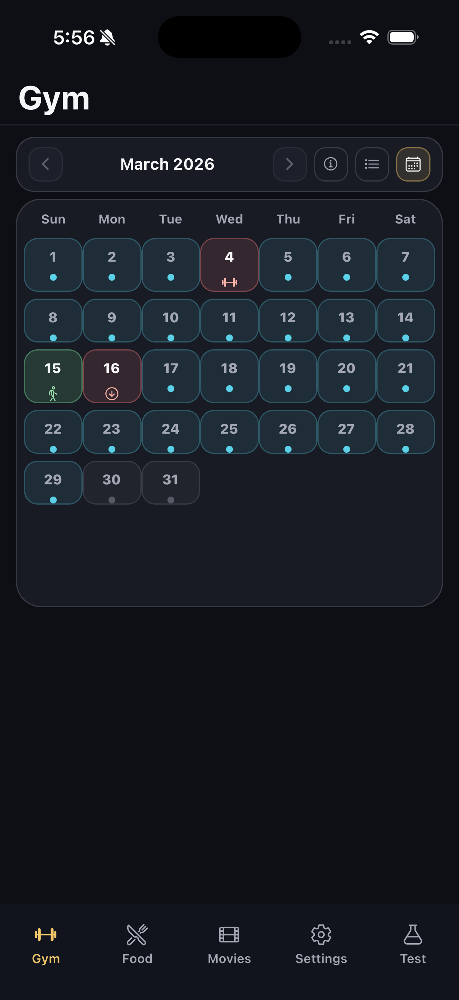

This is the living product and systems document for AppNextwatch. It is meant to explain how the current app is structured, how a user actually moves through each tab, what data and database layers support those interactions, and where future orchestration decisions should be made. The document is intentionally operational: it should be usable as both product reference and build-planning surface.
Expand for the current app map, user journeys, data model, and release workflow.
AppNextwatch is no longer a single-purpose movie app. It is now a multi-surface personal product with five active bottom tabs: Gym, Food, Movies, Settings, and Test. Each tab serves a different product role, and each role has a different relationship to persistent data, user flow, and release risk.
This note should answer five practical questions at all times:
The current app shape is best understood as one stable shell with five tabs, where Gym is the most execution-driven product area, Movies is the most content-browsing area, Settings is the support/admin surface, and Test is the experiment lab.
| Tab | Primary User Job | Main Entry Screen | Data Pattern | Product Role |
|---|---|---|---|---|
| Gym | View, plan, and log gym sessions against specific calendar dates. | `GymHubScreen` embedding `GymSessionsScreen` | Supabase-backed session, exercise, set, and catalog tables | Core execution loop |
| Food | Browse and use a personal recipe list from a simplified food home. | `FoodHubScreen` embedding `CookHomeScreen` | Supabase-backed user recipes, inventory, utensils, and catalog data | Secondary lifestyle module |
| Movies | Discover, browse, and drill into movies, talent, and awards. | `MoviesAppNavigator` with Explore / Directory / Chat / Lists / Profile | Supabase-backed movie directory plus local fallback data | Content and exploration module |
| Settings | Manage library-like reference data that no longer belongs in the main tabs. | `SettingsHubScreen` | Same Supabase tables as Gym/Food, but exposed as management screens | Support infrastructure |
| Test | Run infra checks and prototype gym-adjacent experiments. | `TestHomeScreen` | Mixed: Supabase probes, chat experiments, audio recorder, voice prototypes | Experiment and diagnostic lab |
This section is the start of a living screen reference. Where possible, it should use real screenshots from the simulator. Where a live capture is not yet available, it should still document the layout as a wireframe so product changes can be discussed against something concrete.

Purpose: entry point for planning, review, and retro-logging.
Main actions: change month, toggle list/calendar, open legend modal, tap a session day, tap an empty day.
Data dependency: `user_gym_sessions` plus exercise metadata to derive status and day type.
Purpose: build a session from exercises only, without overloading the user with metadata.
Main actions: add exercise, expand a card, edit sets, reorder cards, continue.
Data dependency: movement and variant options from the gym catalog tables.
Purpose: confirm the session name and date at the end of the builder flow.
Main actions: adjust title, adjust date, save the session.
Constraint: only one session can be saved per day.
Purpose: review a session in a static, scrollable format.
Main actions: inspect collapsed or expanded exercise cards, duplicate, delete, or start a planned session.
Behavior: collapsed cards surface planned or actual set chips depending on session state.
Purpose: execute the workout one exercise at a time.
Main actions: pause/resume, complete, edit planned-as-done sets, move previous/next, view last-time reference and video.
Behavior: leaving the screen pauses the local session timer UI.
Purpose: route into Gym settings or Food settings without turning Settings into another mini-app home.
Main actions: open Gym settings, open Food settings, then return back to Settings home.
Product role: support infrastructure, not primary product loop.
Gym is the most productized area of the app. The home is now directly calendar-first. The user lands on a month selector and a calendar/list toggle, then interacts with days rather than generic session lists.
| Step | User Action | What the App Does | Primary Files |
|---|---|---|---|
| 1 | Open Gym tab | Show the Gym title bar and immediately render the sessions calendar surface. | `app/features/wellness/gym/GymHubScreen.js`, `app/features/wellness/gym/GymSessionsScreen.js` |
| 2 | Change month or switch calendar/list view | Recompute month cells and render session state per day. | `GymSessionsScreen.js` |
| 3 | Tap a day with a session | Navigate into the static session detail / review flow. | `GymSessionWorkScreen.js`, `GymLogDetailScreen.js` |
| 4 | Tap an empty day | Open create-session flow with that date prefilled, allowing retroactive or future planning against a specific calendar day. | `GymSessionCreateScreen.js`, `GymSessionFinalizeScreen.js` |
| 5 | Start an upcoming or ongoing session | Enter the dedicated session player, one exercise card at a time. | `GymSessionPlayerScreen.js` |
| 6 | Log actual sets and complete the session | Persist actual set logs, move session status through in-progress and complete, and preserve the workout in history. | `GymSessionWorkScreen.js`, `GymSessionPlayerScreen.js`, `gymSessionsDb.js` |
| Table / Concept | Purpose | Used By |
|---|---|---|
| `app_users` | Persistent per-user identity used by wellness data. | `foodInventoryDb.js`, `gymSessionsDb.js` |
| `user_gym_sessions` | Session headers: title, date, status, duration, calories, note, started/completed timestamps. | Gym calendar, work screen, player, duplication, deletion |
| `user_gym_session_exercises` | Ordered exercise rows inside a session. | Create flow, detail view, player, reorder logic |
| `user_gym_session_sets` | Planned and actual set-level values. | Logging actuals, showing planned vs done, history comparisons |
| `catalog_exercise_movements` | Movement-level catalog with primary day, media, aliases, and presentation metadata. | Create screen, session views, calendar day-type labels |
| `catalog_exercises` | Variant-level exercise entries with equipment, muscle group, images, and variant labels. | Create screen, detail views, settings catalogs |
The user does not start from a generic “record session” widget anymore. They start from the date layer itself. Empty days become opportunities to plan or retro-log, and filled days become entry points into review or execution.
Planned sessions are meant to become active sessions through the player. The player is deliberately narrower than the detail screen: one exercise at a time, inline set editing, and progression through the workout.
Food has been simplified aggressively. The main Food tab is no longer a multi-surface space with chat, planning, and library browsing. It now behaves more like a focused recipe session surface with add actions and a personal saved-recipe list.
| Step | User Action | What the App Does | Primary Files |
|---|---|---|---|
| 1 | Open Food tab | Show a simple Food title bar and embed the recipe home without extra hero clutter. | `FoodHubScreen.js`, `CookHomeScreen.js` |
| 2 | Browse saved recipes by meal category | Render recipe sections for Breakfast, Lunch, Dinner, Snacks, and Other, with collapse support. | `CookHomeScreen.js` |
| 3 | Add a recipe | Open add-recipe flow and persist user-owned recipe selections. | `AddRecipesScreen.js`, catalog selection hooks |
| 4 | Open a saved recipe | Navigate into cooking session or recipe-detail flow. | `CookRecipeScreen.js` |
Food shares the same Supabase client and app-user model as Gym. It uses user-owned inventory, utensils, and recipes backed by catalog tables and user join tables. The main home uses a generic catalog-selection pattern rather than a bespoke recipe-only implementation.
| Area | Current Behavior | Where It Lives Now |
|---|---|---|
| Recipes | Main content in Food tab. | `CookHomeScreen.js` |
| Inventory | No longer front-stage in Food home. | Settings → Food settings |
| Utensils | No longer front-stage in Food home. | Settings → Food settings |
| Food chat / plan | Removed from the main Food tab because they were not core to the current use loop. | Not part of primary product flow |
| Data Family | Main Tables / Modules | Why It Matters |
|---|---|---|
| User identity | `app_users`, resolved through `getOrCreateAppUser()` | Food ownership is attached to the same persistent app user as Gym. |
| Inventory | `user_ingredients`, `catalog_ingredients`, `foodInventoryDb.js` | Inventory is still an important data layer even though it is no longer the homepage surface. |
| Utensils | User utensil tables and add/detail screens | These are support systems for cooking flows and settings management. |
| Recipes | Recipe list and cook session modules | This is the part the user actually sees first when entering the Food tab. |
Movies remains a richer browsing module with its own nested tab navigator. It is structurally different from Gym and Food because it is not centered on user-owned daily logging. Instead, it is centered on discovery, directory exploration, and media detail.
| Movie Sub-Tab | Job | Current Behavior |
|---|---|---|
| Explore | Swipe or scroll through movie-first discovery. | `ExploreReelsScreen` loads movies from Supabase with local fallback data and presents trailer-rich reel cards. |
| Directory | Browse movies, actors, actresses, directors, and awards. | `DirectoryScreen` hydrates data from Supabase and opportunistically enriches missing wiki images. |
| Chat | Movie chat surface. | Still exists in the nested Movies navigator; currently one of the client-side OpenAI surfaces. |
| Lists | Browse curated or structured movie collections. | `ListsHomeScreen` plus `ListDetailScreen`. |
| Profile | User-side movie profile and watched films. | `ProfileScreen`, `FilmsWatchedScreen`. |
Movies uses Supabase heavily for persistent content (`movies`, `actors`, `directors`, award-related tables), but unlike Gym, it still preserves local fallback datasets so the experience can remain usable if the backend response is missing or incomplete.
| Movies System Layer | Current Implementation | Operational Meaning |
|---|---|---|
| Content fetch | `supabaseApi.js` and related directory hooks | Primary content path for movies, talent, and awards. |
| Fallback data | Bundled local movie datasets | Keeps the experience usable when Supabase is unavailable or incomplete. |
| Detail navigation | Nested stacks inside the Movies tab | Makes Movies behave like a self-contained content product inside the broader app. |
| Chat | Client-side OpenAI path, still present | Known architectural debt; should migrate server-side if retained. |
Settings is now a deliberate support surface. It is no longer a dumping ground for generic profile items. Its main job is to hold the data-management screens that were cluttering Gym and Food.
Provides segmented access to Muscles, Exercises, and Machines. These are catalog-management and exploration surfaces, not the main workout loop.
File map: `GymSettingsScreen.js`, `MusclesHomeScreen.js`, `ExercisesHomeScreen.js`, `GymHomeScreen.js`.
Provides segmented access to Inventory and Utensils. These are support systems for meal execution rather than homepage content.
File map: `FoodSettingsScreen.js`, `FoodInventoryScreen.js`, `FoodUtensilsScreen.js`.
The main architectural implication is good: the core tabs are becoming execution-oriented, while Settings carries the reference data and maintenance surfaces.
Settings should be treated as controlled infrastructure. If a screen exists primarily to maintain catalogs, reference lists, or support data, it belongs here rather than in the main Gym or Food tabs. This keeps the primary tabs focused on use, not administration.
Test is intentionally not part of the main user product loop. It is a controlled lab for diagnostics and experimental features that should not crowd the real tabs.
| Group | Current Items | Why It Exists |
|---|---|---|
| Infra | `Tables`, `OpenAI test connection` | Validate environment configuration, Supabase connectivity, and API round-trips. |
| Gym experiments | `Audio Recorder`, `Voice Gym Coach`, `Basic Chat`, `Create Workout Session` | Keep experimental gym-adjacent surfaces available without polluting the real Gym product flow. |
This tab is strategically useful because it preserves speed of experimentation while protecting the main product from accumulating half-finished surfaces.
AppNextwatch is currently a hybrid app in terms of data patterns. The Movies area is content-oriented and partially tolerant of local fallback data. The wellness areas are user-owned and strongly tied to Supabase persistence.
| Layer | Current Role | Important Notes |
|---|---|---|
| Supabase client | Main persistence client for movies metadata and all wellness data. | Created lazily in `app/core/integrations/supabase.js` from `EXPO_PUBLIC_SUPABASE_URL` and `EXPO_PUBLIC_SUPABASE_ANON_KEY`. |
| API modules | Thin data-access layer around Supabase tables and edge-function calls. | Examples: `gymSessionsDb.js`, `foodInventoryDb.js`, `supabaseApi.js`, `audioRecorderDb.js`. |
| Hooks | View-facing orchestration helpers that resolve user identity, hold loading/error state, and expose app actions. | Example: `useGymSessions()`. |
| Supabase Edge Functions | Server-side route for gym transcription and chat/orchestration experiments. | Used by Gym chat and audio-transcription paths; preferable to client-side OpenAI calls. |
| Local fallbacks | Static data kept for resilience or earlier app behavior. | Most visible in Movies, where local catalog data still backs the UI if Supabase fetches fail. |
| Database Family | Main Tables | Product Area |
|---|---|---|
| App identity | `app_users` | Wellness ownership resolution |
| Gym session system | `user_gym_sessions`, `user_gym_session_exercises`, `user_gym_session_sets` | Gym calendar, session detail, player, history |
| Gym catalog system | `catalog_exercise_movements`, `catalog_exercises` | Exercise library, create-session picker, settings catalogs |
| Food personal data | `user_ingredients`, user recipe tables, utensil tables | Food recipes, inventory, utensils |
| Movie content | `movies`, `actors`, `directors`, `award_shows`, `award_years`, `award_entries` | Explore, Directory, awards, detail pages |
| Concern | Current State | Implication |
|---|---|---|
| Authentication | Demo/local auth through `AuthContext`; wellness data resolves to `app_users` in Supabase. | The login layer is currently a product shell, not a hardened account system. |
| Environment config | Supabase requires `EXPO_PUBLIC_SUPABASE_URL` and `EXPO_PUBLIC_SUPABASE_ANON_KEY` to be present at build or OTA runtime. | If those values are missing, major wellness features degrade immediately. |
| OpenAI architecture | Gym experiments largely use Supabase Edge Functions; some Movies/Food/Test screens still use client-side OpenAI wiring. | The app currently has two AI architectures in parallel; server-side should win over time. |
| Release model | TestFlight provides the native shell, while most day-to-day UI and logic changes can ship over OTA. | Structural product work is now constrained not only by code, but also by runtime compatibility and release discipline. |
The app already has a working TestFlight + OTA operating loop. That matters because this is now a daily-use product, not just a local dev sandbox.
| Release Path | Use When | Current Command / Mechanism |
|---|---|---|
| OTA update | JS-only changes: UI, logic, navigation, text, behavior | `npx eas-cli update --branch production --message "..."` |
| Native build + submit | Runtime or native changes: permissions, SDK, native packages, config | `npx eas-cli build -p ios --profile production` then submit |
| Fallback submission path | If `eas submit` fails | Apple Transporter or `fastlane pilot` |
The release reference already lives in `RELEASE_WORKFLOW.md`. This HTML note should not replace it. Instead, this note should help explain what kind of product change is being made, while `RELEASE_WORKFLOW.md` explains how to ship it safely.
The app is becoming more coherent, but that coherence is still uneven across modules. The strongest strategy is to keep deepening the most real user loops rather than expanding side surfaces.
| Priority Area | Why It Matters | Current Direction |
|---|---|---|
| Gym execution loop | This is the clearest day-to-day utility and the strongest product spine. | Keep making planning, starting, logging, and history lower-friction. |
| Food simplification | Food should not become a second overloaded wellness sandbox. | Keep the main tab narrow; let support data remain in Settings. |
| Movies architecture | Movies is useful, but structurally different from the wellness system. | Preserve it as a content module, but be deliberate about whether it is core to the same product vision. |
| Settings discipline | Settings can easily become a catch-all graveyard. | Keep it limited to support and management surfaces. |
| Test containment | Experiments are useful only if they stay isolated from the main product loop. | Continue moving half-finished or risky surfaces into Test instead of leaving them in Gym/Food. |
AppNextwatch should evolve around a small number of real, repeatable user jobs. Right now the clearest one is gym session execution and recall. That means future orchestration work should treat the app not as a pile of features, but as a system with one strong operational core and several supporting surfaces around it.